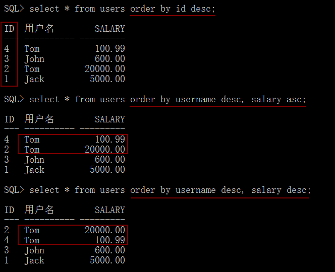
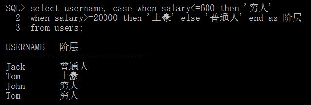

查询语句sql
基本查询语句
在SQL*PLUS中设置格式
查询表中的所有字段及指定字段
给字段设置别名：只针对查询结果，并未更改字段名称
运算符和表达式
在SELECT语句中使用运算符
带条件的查询
模糊查询
范围查询
对查询结果排序
case...when语句的使用
decode函数的使用
基本查询语句
# 从一张表table_name中查询内容
SELECT [DISTINCT] column_name1, ...|* FROM table_name [WHERE conditions]
DISTINCT 不显示重复的记录。
在SQL*PLUS中设置格式
- 设置查询结果显示字段名名称：
COLUMN column_name HEADING new_name
COLUMN 可以简写为 COL

- 设置查询结果显示格式：
COLUMN column_name FORMAT dataformat
| dataformat | 格式 | 说明 |
|---|---|---|
| 字符类型 | a10 | 10代表字符显示长度 |
| 数字类型 | 99.9 | 用9表示一个数字，10输出结果为10.0；加其他符号将被直接输出，如$99.9，输出为$10.0 |
[!WARNING|style:flat|label:注意]
字符类型只能设置其显示长度。

- 清除已设置的格式：
COLUMN column_name CLEAR
# col username clear
查询表中的所有字段及指定字段
# 查询表中的所有字段
select * from table_name;
给字段设置别名：只针对查询结果，并未更改字段名称
SELECT column_name AS new_name, ... FROM table_name
[!WARNING|style:flat|label:注意]
AS关键字可以省略，用空格隔开原来的字段名和新字段名即可。

运算符和表达式
表达式 = 操作数 + 运算符
# 表达式：2 * 3
Oracle中的操作数可以有变量、常量和字段
算术运算符：+, -, *, /
比较运算符：>, >=, <, <=, =, <>(不等)
逻辑运算符：and, or, not，优先级按not、and、or顺序依次递减
[!TIP|style:flat|lable:优先级]
逻辑运算符优先级按not、and、or顺序依次递减
比较运算符的优先级高于逻辑运算符
在SELECT语句中使用运算符

带条件的查询
- 单一条件查询
select * from users where id='2';
- 多条件查询
select * from users where username='Jack' or salary>1000;

模糊查询
- 通配符的使用
_ 一个 _ 只能代表一个字符
% 可以代表0到多个任意字符
- 使用LIKE查询
# 查询用户名以t开头的用户信息
select * from users where username like 't%';

范围查询
# 查询工资范围
# salary >= 600 and salary <= 5000
BETWEEN ... AND ...
IN/NO IN

对查询结果排序
SELECT ... FROM ... [WHERE] ORDER BY column1 DESC/ASC, ...
SELECT ... FROM ... [WHERE] ORDER BY column1 DESC/ASC, column2 DESC/ASC...
# 关键字 order by
# desc 升序
# asc 降序

case...when语句的使用
CASE column_name
WHEN value1 THEN result1, ...
[ELSE result] END

CASE
WHEN column_name=value1
THEN result1, ...[ELSE result] END

decode函数的使用
decode (column_name, value1, result1, ..., defaultvalue)